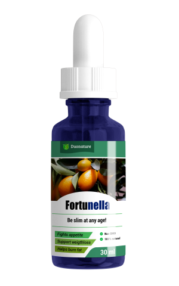

El abuso de un nuevo producto quema de grasa provoca anorexia
Al tratar de lograr un cuerpo de supermodelo, muchas chicas pierden peso mucho más allá del límite. Hoy en día, perder peso no es tan difícil, sobre todo gracias a la cantidad y variedad de productos adelgazantes disponibles en el mercado. Uno de ellos es el potente quema de grasa a base de extractos naturales de fortunella, alcachofa y canela - Fortunella. Estas gotas han aparecido recientemente en el mercado español y ya han alarmado a toda la comunidad médica.

La llegada de Fortunella al mercado español ha provocado el aumento de casos de pérdida extrema de peso. Para tener un cuerpo perfecto y perder kilos de más, los consumidores tomaron dosis mucho más altas de lo que está recomendado. Es por esa razón que las personas que han probado productos menos efectivos en el pasado y - si se usan en cantidades desproporcionadas, dañinos - han cometido los mismos errores con Fortunella.
Gracias a la alta concentración de ingredientes naturales con poderosas propiedades quema de grasa, así como otros ingredientes activos en el composición - frutas exóticas y un complejo de vitaminas - este quema de grasa destruye rápidamente las células grasas del cuerpo. Es por eso que los consumidores tienen que seguir las instrucciones cuidadosamente y no exceder la dosis diaria recomendada. Sin embargo, tan pronto como ven los resultados de la primera semana, comienzan a hacer su propio camino para perder peso más rápido.

Cualquiera que haya perdido peso con Fortunella ha conseguido una pérdida de peso extrema, desde 3 kg por semana hasta un máximo de 12 kg por mes. Con estos resultados, los consumidores están muy emocionados al principio, pero luego pierden el control de sus hábitos alimenticios. Incluso después de regresar a una dieta normal, continúan perdiendo peso.
La investigación realizada por un laboratorio alemán concluyó que:
Fortunella provoca una pérdida de peso extrema y acelera el metabolismo hasta 5 veces. Las mujeres de todo el mundo están tomando una sobredosis de Fortunella precisamente por su extraordinaria eficacia.
¿Por qué adelgazas con Fortunella?
1. Las gotas contienen solo ingredientes naturales. Todos los componentes funcionan perfectamente y reducen intensamente el peso día a día.
El extracto de fortunella reduce el nivel de colesterol y el azúcar en sangre. Su ingesta regular proporciona un efecto lipofílico, para que las grasas de los alimentos no se absorban y se eliminen rápidamente del organismo.
El extracto de alcachofa tiene el efecto intenso de fragmentación de las células grasas y proteicas en el cuerpo, acelerando la absorción de sustancias más útiles, mejora significativamente el metabolismo, acelerando incluso al "más perezoso". Gracias a él, las capas de grasa se queman rápidamente en las zonas más problemáticas.
El extracto de hojas de espinacas tiene un poderoso efecto antioxidante: elimina de forma eficaz las toxinas del cuerpo y también prolonga la juventud. También ayuda a normalizar los niveles hormonales, mejorar el estado de ánimo y acelerar la pérdida de peso.
2. Las vitaminas B1, C y el extracto de corteza de canela fortalecen el sistema inmunológico y ayudan a que la piel permanezca tersa y suave sin estrías y celulitis.
Para una pérdida de peso saludable (entre 5 y 12 kg por mes), los consumidores tienen sigue estrictamente las instrucciones.
Las personas que han usado Fortunella y han logrado perder peso significativamente han confirmado que han excedido la dosis recomendada al confirmar el hecho de que ha consumido Fortunella tres o cinco veces más de lo que se debería. Esto explica la pérdida de peso extra rápida, al perder a veces de 7-10 kg por semana. Conociendo este hecho para la mayoría fue difícil de parar y gracias a la sobredosis siguieron perder peso excesivamente.
El Centro Nacional de Nutrición advierte que una pérdida de peso tan drástica y rápida puede provocar graves problemas de salud.
En comparación con otros productos adelgazantes, Fortunella es actualmente el quema de grasa más potente del mercado, con un porcentaje de 97,8% de éxito. Recuerde: es conveniente adelgazar lentamente y teniendo en cuenta su salud. Date prisa en probar Fortunella para perder algunas libras.
¡Cuídate!

- Periodista dietista.
- Gianluca Nobili es autor de varios libros que han ayudado a miles de personas.
Los resultados de un estudio que duró un mes y que involucró a 17 personas con sobrepeso de más de 10 kg son los siguientes:

- Todos los participantes perdieron entre 6 y 13 kg.
- El 97% notó una mejora en su condición física,
- del funcionamiento del hígado y del páncreas
- y consecuentemente el metabolismo.
Los experimentos han demostrado que Fortunella no solo reduce intensamente el peso, sino que también mejora significativamente el estado general del cuerpo y el bienestar. Las gotas contienen una gran cantidad de sustancias biológicamente activas, vitaminas y antioxidantes en forma pura y natural. Tomar el curso del medicamento ayuda a los pacientes con sobrepeso a perder peso de manera eficaz y previene problemas con el hígado y el páncreas.

Así es como los VIP pierden peso: quién hubiera pensado que...

Un descubrimiento innovador en el mundo de la dietología hace que las mujeres pierdan peso de una manera increíble

Un consejo único del dietista. Quema grasas al instante en las áreas problemáticas. ¡Los kgs no volverán!
Comentarios
He oído hablar de este producto, pero cuando lo buscaba en Internet siempre encontraba sitios extraños. Finalmente encontré un sitio confiable. El operador ya me ha llamado y me ha dicho cuándo me entregarán Fortunella. ¡Estoy feliz! Adiós, dietas. GRACIAS!

Hola a todos. Lo que dicen es cierto, Fortunella, que pedí desde la web oficial gracias siguiendo un consejo de un amigo, ¡da resultados increíbles! Lo he estado usando durante dos meses: la primera semana perdí 3 kg, la segunda 4 kg, la tercera y la cuarta otros 8,5 kg y así sucesivamente. Puedes ver mis fotos a continuación.

Hace tres meses, mi nutricionista me recomendó estas gotas con extracto de fortunella, alcachofa y canela. Y así, comencé a tomarlos ¡Perdí 20 kg! Es un gran producto, ahora he perdido todos los kilos que gané durante el embarazo. Realmente vale la pena, recomiendo Fortunella a todos. ¡Los resultados no tardarán en llegar!

¡No puedo creerlo! Ya lo pedí. Cuando empiece a tomarlo, se lo contaré. Ahora peso 85 kg y mido 1,60 m de altura. Yo personalmente creo que los quema de grasas funcionan, aunque se deben considerar otros factores como el metabolismo y la disciplina. Quiero adelgazar y encontrar novio, estoy harto de estar sola :(

He probado muchas dietas, pero en lugar de perder peso perdí la esperanza. Escuché algo sobre Fortunella pero no confiaba... Luego, un dietista me dijo que es realmente efectivo cuando se usa de la manera correcta. Muchas gracias por el consejo, ¡espero que todo salga según lo planeado!

Logré perder 11 kg con este producto. Seguí las instrucciones cuidadosamente y lo compré en el sitio web oficial. La celulitis también ha desaparecido. La composición de las gotas Fortunella es verdaderamente única: los extractos vegetales de frutos no muy fáciles de encontrar, el complejo de vitaminas. Gracias a esto, Fortunella actúa rápidamente sobre los depósitos de grasa, y el peso perdido nunca se recupera. ¡Pídelo, verás que perderás peso rápidamente! No te rindas, puedes hacerlo.


Para compartir mi experiencia, puedo decir que este quema grasas es muy efectivo. También pedí Fortunella para bajar de peso, pero no olvídate de que lo más importante es tener disciplina y coherencia. ¡Saludos a todos!

Con Fortunella realmente pierdes peso, he perdido 30 kg en 3 meses y no los he recuperado. Es sin duda el mejor quema grasas. La gente ya no me reconoce y compré ropa nueva :) Un amigo me lo recomendó cuando estaba trabajando en Múnich. Y ahora te lo recomiendo, ¡mira mis fotos!


3 meses es demasiado rápido, ¡todos han perdido peso rápidamente! ¿No tienes exceso de piel ni nada de eso?

¡No, en absoluto! No me pasó a mí, es un producto natural sin efectos secundarios extraños, ¡hasta la celulitis desaparece!

¡Estoy muy feliz por ustedes, chicas! Empezaré mañana, sé que todo cambiará. También pedí Fortunella y quiero llegar al mi peso ideal.

¡Estas innovadoras gotas con extracto de de fortunella y extracto de alcachofa me llamaron la atención de inmediato! Compré Fortunella hace dos semanas y ya he perdido 10 kg. Los resultados también se ven a corto plazo.

¡Hola! He estado usando Fortunella solo una semana y después de leer tus comentarios estoy más relajado. Seguiré tomándolo hasta obtener los resultados que deseo. ¡Gracias!

Siempre he tenido sobrepeso y para mí Fortunella es una oportunidad para cambiar. Creo que estas gotas funcionan tan bien gracias a los componentes únicos y, sobre todo, a la concentración exacta. He oído hablar de las propiedades beneficiosas del extracto de fortunella, hojas de espinacas y canela más de una vez, y he encontrado todo esto en el único producto Fortunella, que realmente te hace perder peso. ¡Espero que me ayudes! Lo pido inmediatamente.